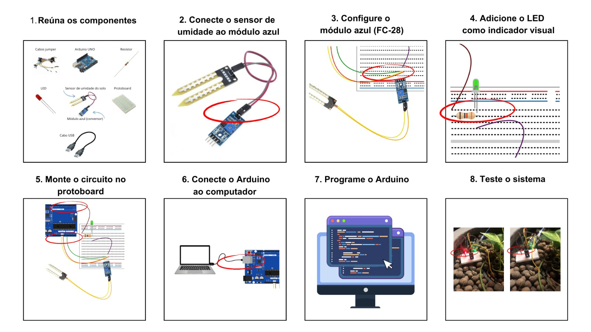

Sistema de Irrigação Inteligente
Objetivo
O objetivo deste projeto é desenvolver um sistema de irrigação inteligente utilizando o Arduino para otimizar o consumo de água em plantações e jardins, garantindo uma irrigação eficiente e automatizada com base nas condições reais do solo e ambiente. A proposta busca atender tanto profissionais da agricultura quanto pequenos produtores e jardineiros, oferecendo uma solução de baixo custo e fácil implementação.
Descrição do Projeto
Motivação: A motivação para desenvolver o sistema de irrigação inteligente surge da necessidade crescente de preservação dos recursos naturais, especialmente a água, que é um recurso limitado e essencial para a agricultura. Em um cenário de mudanças climáticas, onde as secas são mais frequentes e imprevisíveis, é fundamental buscar soluções que combinem sustentabilidade e tecnologia. Além disso, o projeto busca facilitar a vida de pequenos agricultores e jardineiros que enfrentam dificuldades em monitorar constantemente as necessidades de irrigação de suas plantas. Ao automatizar esse processo com o uso de sensores e o Arduino, o sistema visa promover uma agricultura mais eficiente, reduzindo custos operacionais e aumentando a produtividade.
Objetivo: A ideia é criar um sistema que, de forma autônoma, detecte a umidade do solo e ative a irrigação apenas quando necessário, evitando o excesso de água. Em casos mais avançados, pode-se integrar o projeto com uma rede de sensores IoT para monitoramento e ajustes em tempo real, usando tecnologias de conectividade como o Wi-Fi ou Bluetooth.
Contextualização: O Sistema de Irrigação Inteligente pode ser utilizado por donas de casa ocupadas e Explique o contexto e área de aplicação.
Esquema Conceitual
Palavras-chave
- Irrigação
- Arduíno
- Automatização
Autoras

Componentes
e Suprimentos
- BlackBoard UNO R3
- Soil Humidity Sensor
- LED Vermelho
- Jumpers M/M
- Jumpers M/F
- Resistor de 300 Ohms
- Cabo USB
Aplicativos e Plataforma
- 1. Driver
- 2. Thinkercad
Passo a Passo
Código
#define ledPin 6
#define sensorPin A0
void setup() {
Serial.begin(9600);
pinMode(ledPin, OUTPUT);
digitalWrite(ledPin, LOW);
}
void loop() {
int outputValue = readSensor();
Serial.print("Valor do Sensor: ");
Serial.print(analogRead(sensorPin));
Serial.print(" -> Brilho do LED: ");
Serial.println(outputValue);
delay(500);
}
int readSensor() {
int sensorValue = analogRead(sensorPin);
int outputValue = map(sensorValue, 0, 1023, 255, 0);
analogWrite(ledPin, outputValue);
return outputValue;
}
Download do Projeto
Vídeo Tutorial
Problemas enfrentados e Lições Aprendidas
Desafios: O projeto envolve a utilização da linguagem de programação C++, o que dificultou o desenvolvimento e o andamento do protótipo de irrigação.
Lições Aprendidas: Desenvolvemos habilidades, como: Gestão de tempo, gestão de projetos, C++, manipulação de HTML, CSS, JavaScript, manipulação e criação de projetos com arduíno uno.